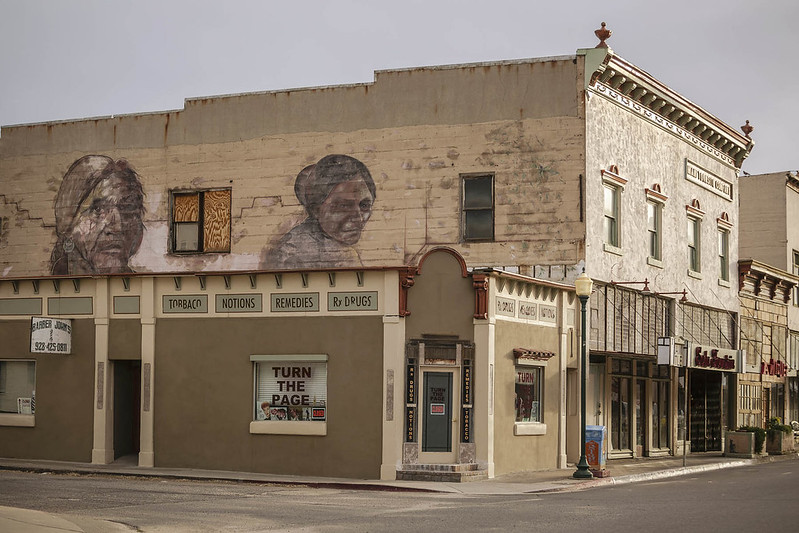

Jo Wickett is guy with cat ears. He lives in a small town in the middle of nowhere called Bordeaux. It is so very mundane and boring that nothing happens yet somehow miracously it is the center of all of Jo's problems, adventures, and misadventures. It is the bane of Jo's existence, he hates every part of it, yet he never moves. He compares his town to a bacon, egg, and cheese on a roll. "It's so goddamn comfy, nothing else will ever top it. Except maybe a dollar on the ground."
